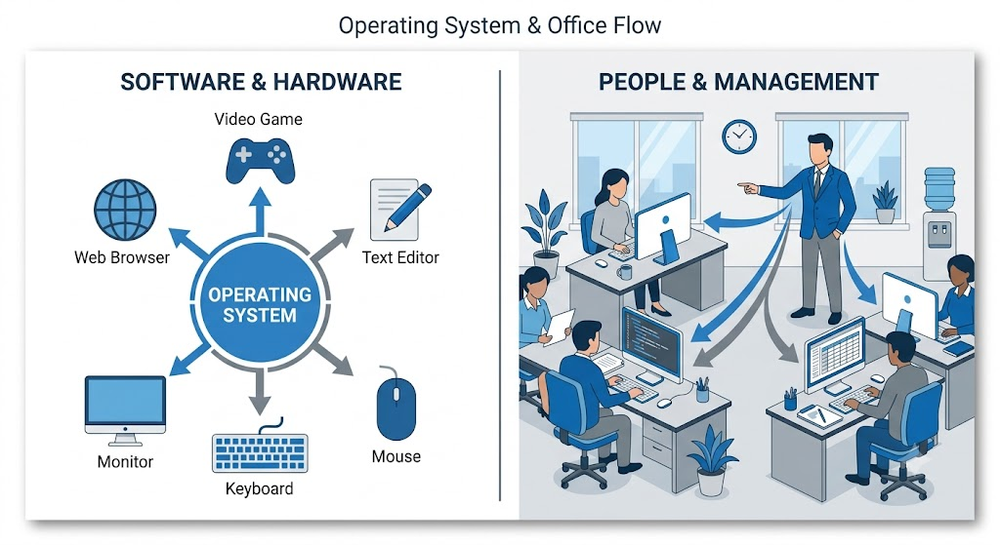
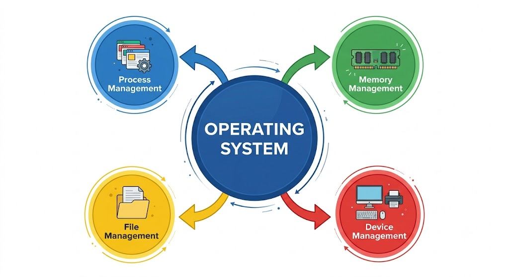
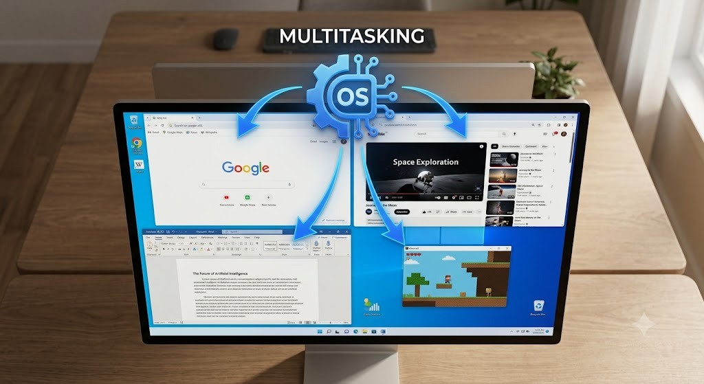
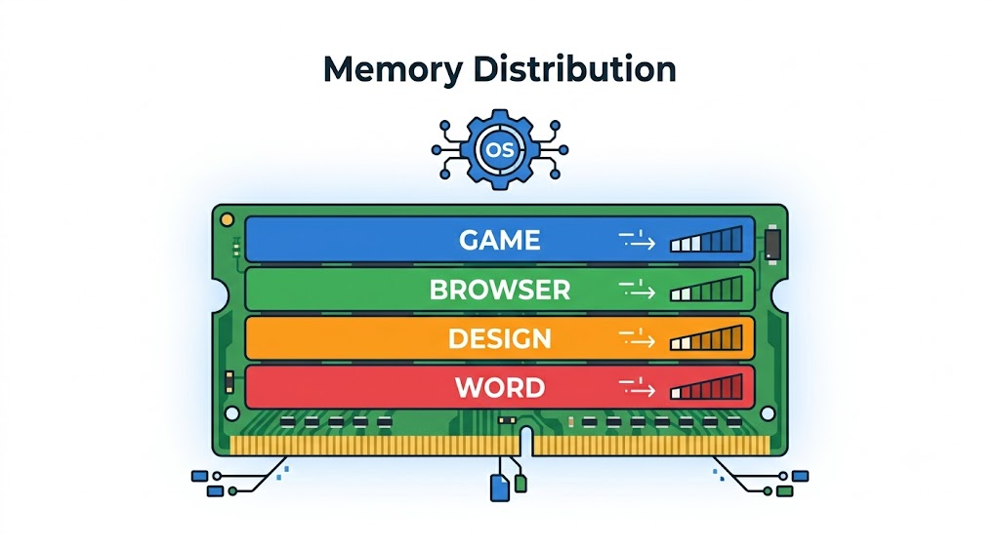
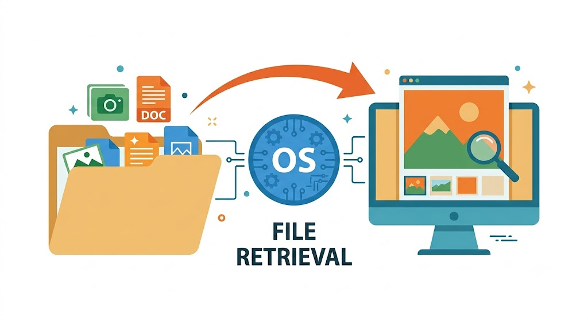
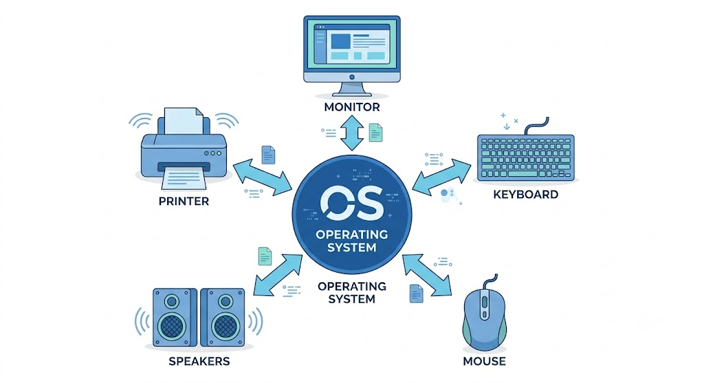

The Main Functions of the Operating System
المستوى الأول
تعرف على الوظائف الأربع الرئيسية لنظام التشغيل: إدارة العمليات، الذاكرة، الملفات، والأجهزة.
بعد الانتهاء من هذا الدرس، ستكون قادرًا على:
في الدرس السابق تعرفنا على أن نظام التشغيل (Operating System) هو البرنامج الأساسي الذي يدير الحاسوب، ويعمل كحلقة وصل بين المستخدم والبرامج والمكونات المادية.
لكن يبقى السؤال: ما الذي يفعله نظام التشغيل طوال الوقت؟
في الحقيقة، بمجرد تشغيل الحاسوب يبدأ نظام التشغيل في تنفيذ مئات العمليات المختلفة، فهو لا يكتفي بتشغيل الجهاز فقط، بل ينظم عمل جميع البرامج، ويوزع موارد الجهاز بينها، ويتحكم في الملفات والأجهزة، حتى يعمل كل شيء بصورة سليمة.
يمكن تشبيه نظام التشغيل بمدير شركة كبيرة، حيث يقوم بتنظيم عمل جميع الأقسام في الوقت نفسه حتى لا يحدث أي تعارض أو فوضى.

(Image: A manager in the center of a large office directing multiple employees, next to it a diagram showing the OS organizing programs and devices.)
يقوم نظام التشغيل بأربع وظائف رئيسية تعمل معًا باستمرار:
(Process Management)
(Memory Management)
(File Management)
(Device Management)
كل وظيفة من هذه الوظائف مسؤولة عن جزء معين من عمل الحاسوب، وعند تعاونها معًا يستطيع الجهاز تشغيل البرامج بسرعة وكفاءة.

(Image: Circular diagram with "Operating System" in the center and four arrows branching to the four functions.)
عندما تقوم بفتح أي برنامج، مثل: متصفح الإنترنت، لعبة، برنامج Word، آلة حاسبة. فإن هذا البرنامج يتحول إلى عملية (Process)، أي برنامج يعمل الآن داخل الحاسوب.
العملية (Process): هي برنامج قيد التشغيل يتم تنفيذ تعليماته بواسطة المعالج.
قد تعتقد أن جميع البرامج تعمل في الوقت نفسه، لكن الحقيقة مختلفة.
المعالج (CPU) ينفذ عددًا محدودًا من التعليمات في كل لحظة، لذلك يقوم نظام التشغيل بتقسيم وقت المعالج إلى أجزاء صغيرة جدًا، ويعطي كل برنامج جزءًا من هذا الوقت.
تتكرر هذه العملية بسرعة هائلة، فيبدو للمستخدم أن جميع البرامج تعمل معًا.
ويُعرف ذلك باسم: تعدد المهام (Multitasking)
أثناء الدراسة قد تقوم بـ:
كل هذه البرامج تعمل بفضل إدارة العمليات.

(Image: Screen showing four open programs with arrows from the OS to each program.)
يعتمد تشغيل البرامج على وجود مساحة داخل ذاكرة الوصول العشوائي (RAM). لكن RAM ليست غير محدودة، لذلك يجب تنظيم استخدامها. وهنا يأتي دور نظام التشغيل.
إدارة الذاكرة هي عملية تنظيم استخدام ذاكرة RAM وتوزيعها بين البرامج المختلفة.
إذا فتحت: لعبة، متصفح، برنامج تصميم، Word. فإن جميعها تحتاج إلى RAM. يقوم نظام التشغيل بتوزيع الذاكرة بينها حتى تعمل جميعها بأفضل شكل ممكن.

(Image: Rectangle representing RAM divided into four parts, each labeled with a program name.)
ولهذا فإن زيادة سعة RAM تساعد على تشغيل برامج أكثر في الوقت نفسه.
كل الملفات الموجودة على جهازك، مثل: الصور، الفيديوهات، المستندات، الألعاب، البرامج. تحتاج إلى تنظيم. وهذا التنظيم يقوم به نظام التشغيل.
إدارة الملفات هي عملية إنشاء الملفات وتنظيمها وتخزينها واسترجاعها عند الحاجة.
عند الضغط على صورة: يبحث نظام التشغيل عنها، يحدد مكانها، يقرأها من وحدة التخزين، يرسلها إلى برنامج عرض الصور، تظهر الصورة على الشاشة. كل ذلك يحدث خلال أجزاء من الثانية.

(Image: Folder containing images and files with an arrow showing an image moving to the computer screen.)
تخيل لو كانت جميع ملفات جهازك موجودة في مكان واحد دون أسماء أو مجلدات. سيصبح العثور على أي ملف أمرًا صعبًا جدًا. ولهذا ينظم نظام التشغيل جميع الملفات داخل مجلدات مرتبة.
يحتوي الحاسوب على العديد من الأجهزة، مثل: الشاشة، لوحة المفاتيح، الفأرة، الطابعة، السماعات، الكاميرا، الميكروفون. يجب أن تعمل جميع هذه الأجهزة معًا بطريقة صحيحة.
إدارة الأجهزة هي التحكم في طريقة عمل مكونات الحاسوب والتنسيق بينها.
عند تشغيل فيلم: يرسل نظام التشغيل الصورة إلى الشاشة، ويرسل الصوت إلى السماعات، وينسق بينهما حتى يعمل الصوت والصورة في الوقت نفسه.

(Image: Monitor, speakers, keyboard, and mouse all connected to the Operating System.)
لنفترض أنك فتحت لعبة. ما الذي يحدث؟
ولهذا تعتمد جميع أجزاء نظام التشغيل على بعضها البعض.
لا يؤدي نظام التشغيل هذه الوظائف مرة واحدة فقط، بل يكررها آلاف المرات في الثانية الواحدة، لذلك يستطيع الجهاز الاستجابة بسرعة كبيرة لكل أمر يصدره المستخدم.
| المصطلح | التعريف |
|---|---|
| العملية (Process) | برنامج قيد التشغيل حاليًا. |
| إدارة العمليات (Process Management) | تنظيم تشغيل البرامج وتوزيع وقت المعالج بينها. |
| إدارة الذاكرة (Memory Management) | تنظيم استخدام ذاكرة RAM وتخصيصها للبرامج. |
| إدارة الملفات (File Management) | تنظيم الملفات والمجلدات داخل وحدة التخزين. |
| إدارة الأجهزة (Device Management) | التحكم في عمل الأجهزة المختلفة والتنسيق بينها. |
| تعدد المهام (Multitasking) | تشغيل عدة برامج بالتبديل السريع بينها بواسطة نظام التشغيل. |
بعد الضغط على هذا الزر سيظهر زر الانتقال للدرس التالي.